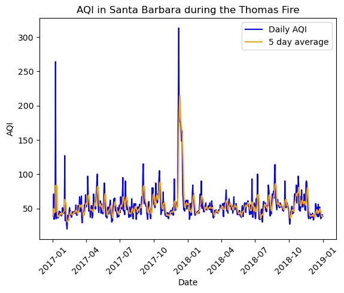
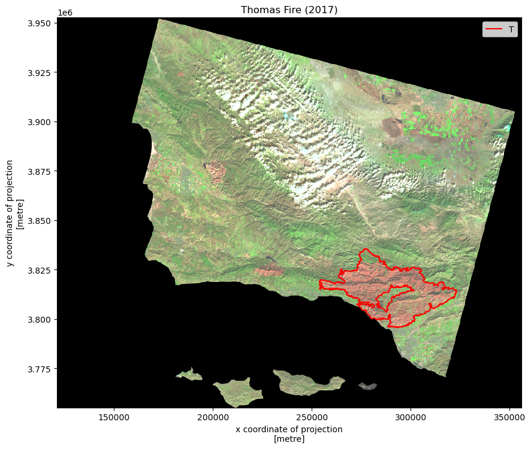
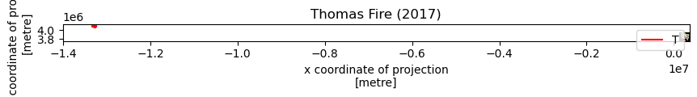

![]()
import os
import numpy as np
import pandas as pd
import geopandas as gpd
import matplotlib.pyplot as plt
import xarray as xr
import rioxarray as rioxrAbout
The Thomas Fire of December 2017 burned approximately 440 miles squared in Ventura and Santa Barbara counties. It was not fully contained until the the middle of January 2018. This fire had huge implications, as it displaced over 100,000 southern California residents, required the largest deployment of firefighters in California history to combat a wildfire, and cost over $200 million to fight.
To analyze the impact of the wildfire, we will look into the implications for air quality in the surrounding areas and how the vegetation was impacted using false color imagery.
Highlights of analysis
Datetime analysis
Rolling averages
Manipulation of xarray data
False color mapping
Dataset Descriptions
- Air Quality Index (AQI) data from the US Environmental Protection Agency
https://www.epa.gov/outdoor-air-quality-data
This dataset includes extensive information about air quality throughout the United States recorded by outdoor monitors.
- Landsat Collection 2 Level-2 atmospherically collected surface reflectance data, collected by the Landsat 8 satellite
https://planetarycomputer.microsoft.com/dataset/landsat-c2-l2
This collection of data includes landsat data from 1982 to the present day.
- California fire perimeter data from the US Department of the Interior
https://catalog.data.gov/dataset/california-fire-perimeters-all-b3436
This catalog houses data about fire perimeters of all fires that have occurred in California.
Air Quality Index data analysis
Before we do any analysis, our first step is always to read in our necessary libraries
For the AQI data, we are going to read in the csv files directly from their url.
# Read in data from URL
aqi_17 = pd.read_csv("https://aqs.epa.gov/aqsweb/airdata/daily_aqi_by_county_2017.zip", compression='zip')
aqi_18 = pd.read_csv("https://aqs.epa.gov/aqsweb/airdata/daily_aqi_by_county_2018.zip", compression='zip')Now we can do our analysis! This first part includes cleaning the aqi data, evaluating the rolling average, and plotting our results.
Combine and clean data
First, we bring together our dataframes from 2017 and 2018. Then we clean the column names by putting them all in lower snake case. Finally, we filter the data to only Santa Barbara and drop unnecessary columns.
# Use the concat() function to combine the two dataframes
aqi = pd.concat([aqi_17, aqi_18])
# Simplify column names
aqi.columns = (aqi.columns
.str.lower()
.str.replace(' ','_'))
# Filter to data only from Santa Barbara county
aqi_sb = aqi[aqi['county_name'] == 'Santa Barbara']
# Drop state_name, county_name, state_code, and county_code columns from dataframe
aqi_sb = aqi_sb.drop(['state_name','county_name','state_code','county_code'], axis = 1)Take rolling average of AQI data
Next, we put the date as the index of our dataframe so that we can use the index to take a rolling average over five days.
# Convert 'date' column to be of type datetime
aqi_sb.date = pd.to_datetime(aqi_sb.date)
aqi_sb = aqi_sb.set_index('date')
# Calculate AQI rolling average over 5 days
rolling_average = aqi_sb['aqi'].rolling(window = '5D').mean()
# Add a new column which includes the mean AQI for the 5 day rolling window
aqi_sb['five_day_average'] = rolling_averagePlot
And now we can plot! We are going to plot the five day average over the total data. We are going to do this using matplotlib.
# Plot the data
plt.plot(aqi_sb.index.values, aqi_sb['aqi'], color = "blue")
plt.plot(aqi_sb.index.values, aqi_sb['five_day_average'], color = "orange")
plt.xticks(rotation=45)
plt.title("AQI in Santa Barbara during the Thomas Fire")
plt.xlabel("Date")
plt.ylabel("AQI")
plt.legend(['Daily AQI', '5 day average'])
False color mapping data analysis
For the next part of our analysis, we are going to use false color imagery to map the fire. To begin, we’re going to read in all of our data, both the landsat and fire perimeter data. For the landsat data, we use the os path for reproducibility’s sake.
# Import landsat data
fp = os.path.join('data','landsat8-2018-01-26-sb-simplified.nc')
landsat = rioxr.open_rasterio(fp)# Inspect the data
landsat<xarray.Dataset> Size: 25MB
Dimensions: (band: 1, x: 870, y: 731)
Coordinates:
* band (band) int64 8B 1
* x (x) float64 7kB 1.213e+05 1.216e+05 ... 3.557e+05 3.559e+05
* y (y) float64 6kB 3.952e+06 3.952e+06 ... 3.756e+06 3.755e+06
spatial_ref int64 8B 0
Data variables:
red (band, y, x) float64 5MB ...
green (band, y, x) float64 5MB ...
blue (band, y, x) float64 5MB ...
nir08 (band, y, x) float64 5MB ...
swir22 (band, y, x) float64 5MB ...The dimensions of the landsat data is (band:1, x:870, y:731). The variables included are the red, green, and blue band, as well as the near infrared and short wave infrared.
landsat.rio.crsCRS.from_epsg(32611)Additionally, we see that the crs of the landsat is epsg: 32611. First, we are going to drop the band dimension from the landsat data, and then view the landsat data again to confirm that it was dropped.
# Drop the band dimension from the data
landsat = landsat.squeeze("band", drop=True)# Confirm that the band dimension was dropped
landsat<xarray.Dataset> Size: 25MB
Dimensions: (x: 870, y: 731)
Coordinates:
* x (x) float64 7kB 1.213e+05 1.216e+05 ... 3.557e+05 3.559e+05
* y (y) float64 6kB 3.952e+06 3.952e+06 ... 3.756e+06 3.755e+06
spatial_ref int64 8B 0
Data variables:
red (y, x) float64 5MB ...
green (y, x) float64 5MB ...
blue (y, x) float64 5MB ...
nir08 (y, x) float64 5MB ...
swir22 (y, x) float64 5MB ...For our first plot, a true color plot, we are going to select the red, green and blue variables in that order and then convert it to a numpy.array. Then, we will plot it.
# Use robust parameter to update scale for the plot
landsat[['red','green','blue']].to_array().plot.imshow(robust=True)
Now, we are going to read in the Thomas Fire Boundary data. In order to make sure we are able to later convert the crs to match that of the landsat data, we will assign it a preliminary crs.
# Read in thomas_boundary in this notebook from data folder
thomas_boundary = gpd.read_file('data/Thomas_Fire_boundary.shp').set_crs(epsg=32611)# Make sure that the thomas fire boundary and the landsat data are the same CRS
thomas_boundary = thomas_boundary.to_crs(landsat.rio.crs)
landsat.rio.crs == thomas_boundary.crsTrue# Create a map with the false color image (like the one above) and the Thomas Fire perimeter
fig, ax = plt.subplots(figsize=(10,10))
landsat[['swir22','nir08','red']].to_array().plot.imshow(ax=ax,
robust=True)
thomas_boundary.boundary.plot(ax=ax,
color="red")
ax.set_title("Thomas Fire (2017)")
ax.legend("Thomas fire boundary")
plt.show()
Sources
Microsoft. Landsat C2 L2. Microsoft Planetary Computer. Retrieved November 12, 2024, from https://planetarycomputer.microsoft.com/dataset/landsat-c2-l2
United States Environmental Protection Agency. (n.d.). Daily Air Quality Index (AQI) . EPA. https://aqs.epa.gov/aqsweb/airdata/download_files.html#AQI
U.S. Department of Homeland Security. (n.d.). California fire perimeters (All) [Data set]. Data.gov. https://catalog.data.gov/dataset/california-fire-perimeters-all-b3436
Citation
BibTeX citation:
@online{peterson2024,
author = {Peterson, Liz},
title = {Thomas {Fire} Analysis},
date = {2024-12-04},
url = {https://egp4aq.github.io/posts/2024-12-02-220-final},
langid = {en}
}
For attribution, please cite this work as:
Peterson, Liz. 2024. “Thomas Fire Analysis.” December 4,
2024. https://egp4aq.github.io/posts/2024-12-02-220-final.